just a… DRAWmaster

A ground-up recreation in the spirit of Serif’s DrawPlus — the same menus, in the same places.
A vector editor — shapes, lines, freehand and polylines, a QuickShapes gallery and drop-shadow/glow effects — saved as scalable SVG it can re-open and keep editing.
A closer look
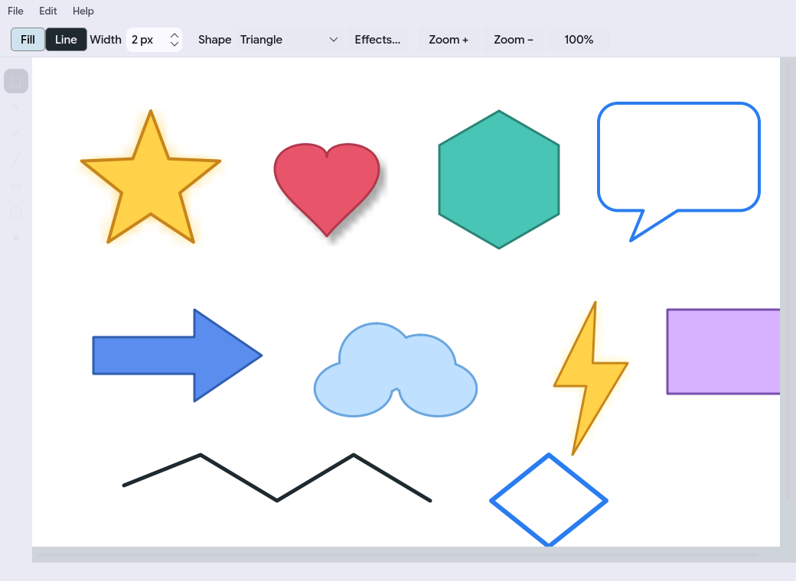
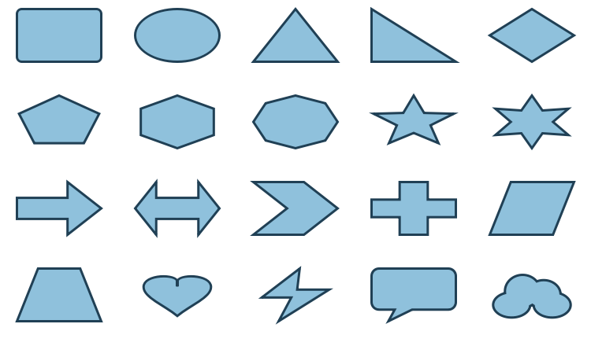
The QuickShapes · 20
Twenty ready-made shapes, each one drawn by the app itself. Drag a shape onto the page, then resize, recolour and add effects.
Nothing matches that.
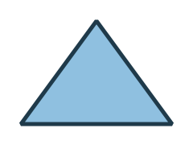
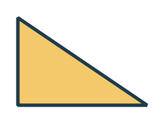
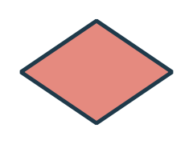
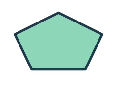
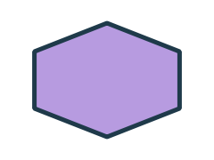
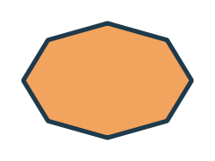
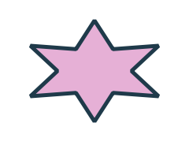
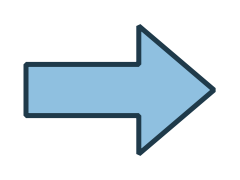
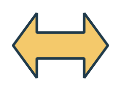
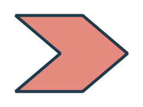
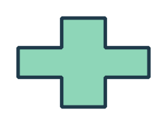
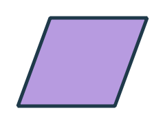
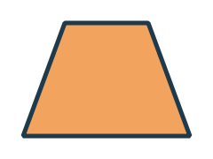
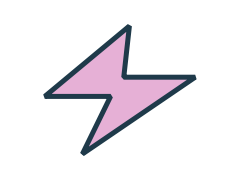
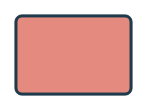
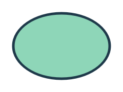
What it does
- Rectangles, ellipses, lines, pen (polyline) and freehand paths
- A gallery of 20 QuickShapes; drop shadow & outer glow
- Re-opens its own SVGs losslessly (the drawing is stored in the file)
- Export PNG, or send the drawing to PAINTcanvas for raster work
- Infinitely scalable SVG output
Install DRAWmaster
Install the dependencies for your distribution, then clone and run the installer. Nothing needs root except the dependency line.
Arch / CachyOS / Manjaro:
sudo pacman -S --needed pyside6Then, on any distribution:
git clone https://github.com/janszafranski/just-a-collection-of-apps.git
just-a-collection-of-apps/apps/draw/install.shOnly PySide6 is strictly required — use your distribution's package,
not pip, so the app follows your desktop theme. The installer checks the rest and tells you
what, if anything, is missing. There is an uninstall.sh beside it.